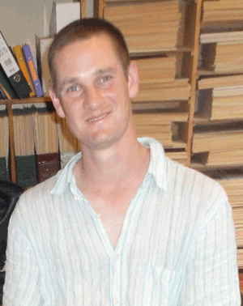

COMERCIO JUSTO
EMPRESA ALEMANA
COMPRA CAFÉ DE ALTA CALIDAD

¿En dónde se puede conseguir café Río Intag en Alemania? En el Quijote Café. La empresa alemana compra el café de la Zona a la Asociación Agroartesanal Café Río Íntag (AACRI) y lo distribuye. Andreas Felsen, empresario cafetalero, estuvo en Íntag para conocer de cerca el trabajo de la Asociación. Salió convencido que el comercio justo tiene mucho futuro. El periódico INTAG le entrevistó para conocer de la empresa y las expectativas que tienen en cuanto al trabajo con la AACRI.
La sede de Quijote Café está en la ciudad de Hamburgo, Alemania. En junio del año pasado hicieron la primera importación del café de la AACRI, la compra de diez toneladas de grano verde. Quijote Café es un distribuidor: vende a pequeñas empresas tostadoras de café y consumidores directos . Durante su visita, Andreas, más conocido como Pingo, recorrió por primera vez la Ruta del Café en Íntag.
En una entrevista con este medio a fines de junio, Pingo dijo que, más que una empresa, Quijote Café es un colectivo de comercio justo especializado en el tostado de calidad. Pusieron El Quijote porque el personaje, protagonista de la famosa novela de Miguel de Cervantes, es un símbolo de una vida basada en ideales y en la lucha para la justicia para los menos afortunados. En cuanto a esto, la empresa tiene gran relación, aseguró. El entrevistado recalcó que lo más importante es que el comercio sea directo. El comercio justo, no es ayudar, pero fomentar la solidaridad mutua, es decir, trabajar en forma igual, con compañeros, afirmó. Por eso es que vende el café a empresas tostadoras pequeñas que aseguran la calidad y trabajan de forma ecológica, transparente y sin intermediarios.
Quijote Café compra café verde porque en Alemania hay una diferente cultura de tostar el café puro y de mezclarlo, y también por la frescura del café recién tostado y molido. Al consultarle sobre el valor agregado que podría haber al comprar el café molido en Íntag el dijo que se perdería la frescura de un café de la calidad que ellos ofrecen. Aclaró que el transporte en barco demora unas cuatro semanas y eso significaría que ya el café no está fresco. La otra posibilidad sería transportarlo vía aérea pero es muy caro y tiene más gastos ambientales, recalcó.
Conocer todo lo que está detrás del café fue la meta de Pingo en esta visita. Sabía de la importancia de Íntag, el café de sombra y el conflicto minero desde hace años por su cercanía con los voluntarios alemanes que vienen a la zona. Pero ahora recorrió la Ruta del Café con un grupo que incluía a personas de toda Europa. Visitaron 20 fincas cafetaleras, conocieron sobre la siembra, la cosecha y el procesamiento del café. Su idea es que por una o dos veces al año, grupos de clientes u otros tostadores conozcan la asociación, y traben una relación directa con los pequeños productores. Luego de esta experiencia, salió convencido de que el comercio justo del café y el turismo con las comunidades tienen gran potencial.
Pie de foto: Andreas Felsen, empresario de Quijote Kaffee visitó la Zona y y conoció algunos proyectos inteños.
{niftybox background=#F0F0EE,textcolor=green,font=, width=, height=,clear=}
Hamburgo
Los inicios de esta ciudad alemana datan de los tiempos de Carlomagno, emperador del Occidente, que ordenó que se construyera un castillo en el sitio en el año 808. La temprana historia de Hamburgo es muy conflictiva. El primer intento de ocupación por un pueblo guerrero fue en el año 845 cuando los vikingos llegaron en 600 barcos y destruyeron el poblado de unos 500 habitantes en aquella época. En el 1030, el rey Miecislao II de Polonia incendió la ciudad y Valdemar II de Dinamarca la asaltó y ocupó, en 1201 y 1214, respectivamente.
También fue víctima de enormes incendios: los más notables fueron los de 1284 y 1842. En este último, alrededor de una cuarta parte de Hamburgo fue destruida durante los cuatro días que duró la conflagración. Las llamas arrasaron tres iglesias, el ayuntamiento y muchos edificios más, mató a 51 personas y dejó a unas 20 mil sin hogar. La reconstrucción tardó más de 40 años.
Durante la Segunda Guerra Mundial la ciudad fue devastada por bombardeos de las fuerzas aéreas de Gran Britania y Estados Unidos entre 1940 y 1943. Murieron unas 40 mil personas y se destruyó el 70 por ciento de Hamburgo. En el campo de concentración nazi de Neuengamme, en las afueras de la ciudad, perecieron casi 70 mil personas.
Hamburgo, un puerto importantísimo, es la ciudad más próspera de Alemania. Sus casi 1,8 millones de habitantes viven en un ambiente muy agradable, con grandes espacios verdes, lagos en el centro de la ciudad y dos ríos que forman una ‘y’ alrededor de la zona urbana y sobre cuyas aguas se han construido numerosos puentes. La ciudad está en las orillas del río Elba, que desemboca en el mar del Norte a unos 100 kilómetros de distancia. El río es navegable, incluso por barcos grandes. Por esta razón ha sido el puerto europeo con más tráfico marítimo que cualquier otro con la excepción de Rotterdam en los Países Bajos.
{/niftybox}